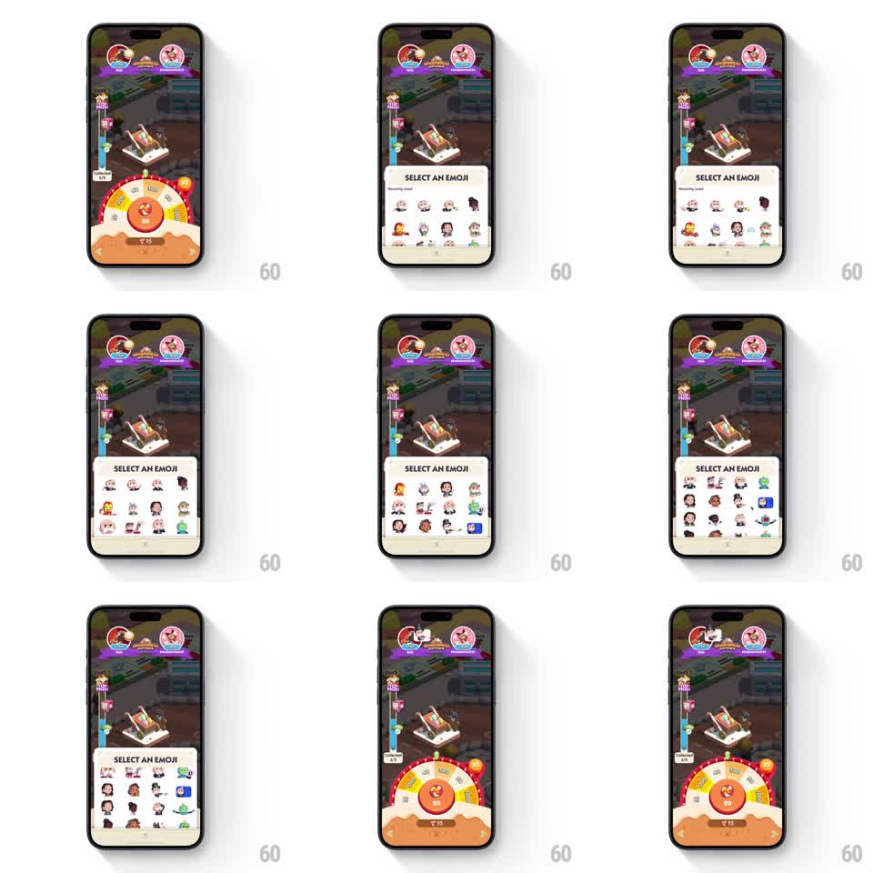

Media
Frame-by-frame

Rebuild this animation 1:1: Monopoly Go's emoji picker-to-wheel handoff - the "SELECT AN EMOJI" sheet dismisses downward on selection while the prize wheel springs up from below to take its place.

Rebuild this animation 1:1: Monopoly Go's emoji picker-to-wheel handoff - the "SELECT AN EMOJI" sheet dismisses downward on selection while the prize wheel springs up from below to take its place. ## Integration Integration: stack-agnostic spec - springs given as stiffness/damping, timed motions as duration + curve; map every value to your framework and animation library of choice. ## Scene The Monopoly Go board dimmed behind a bottom sheet titled "SELECT AN EMOJI" with a "Recently used" grid of character emojis. On selection, the sheet drops away and a half-arc prize wheel (multiplier segments, spin count) springs up from the bottom. The chosen emoji flies up to the opponent's avatar at the top of the screen. ## Motion spec Pattern: sheet swap with flying emoji, ~1.2s. - Tapping an emoji marks it with a blue selection badge (scale pop, stiffness 400 damping 18). - The sheet slides down and off (300ms, ease-in), and in the same beat the prize wheel rises from the bottom (spring stiffness 260 damping 20, slight overshoot). - The selected emoji detaches from the grid and flies along an arc to the opponent avatar at top (500ms, ease-in-out), shrinking as it lands, then popping into a chat-style sticker beside the avatar. - The board stays dimmed until the wheel is fully up, then restores. ## Calibration - The sheet exit and wheel entrance overlap by about 100ms - one continuous swap, never a gap. - The wheel's spring settle is the playful beat; let it wobble once. ## Reduced motion Sheet fades, wheel fades in, emoji jumps to the avatar. ## Don't miss - The emoji grid scrolls; "Recently used" is its first section. - The wheel arrives already spun-up and idle, waiting for the next input.